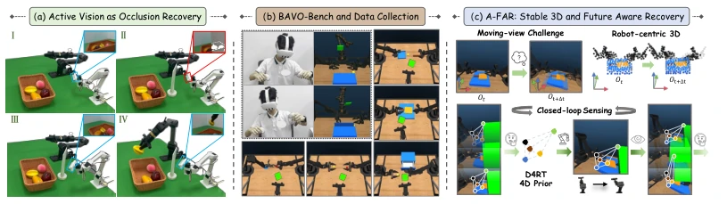
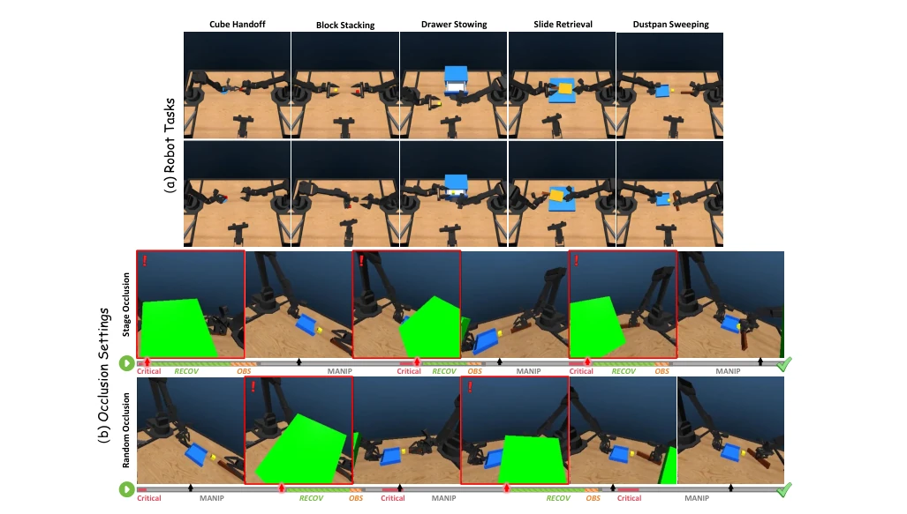
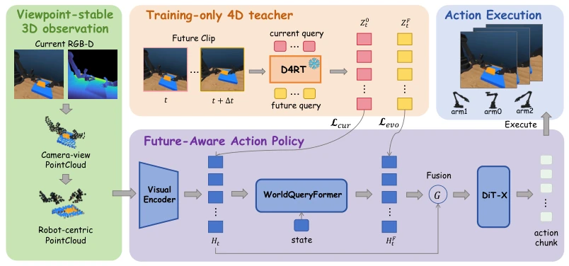
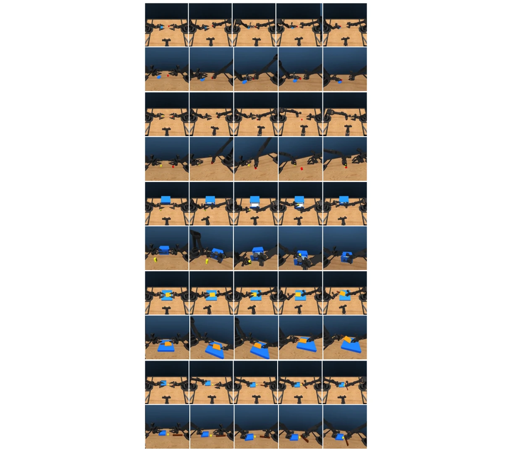
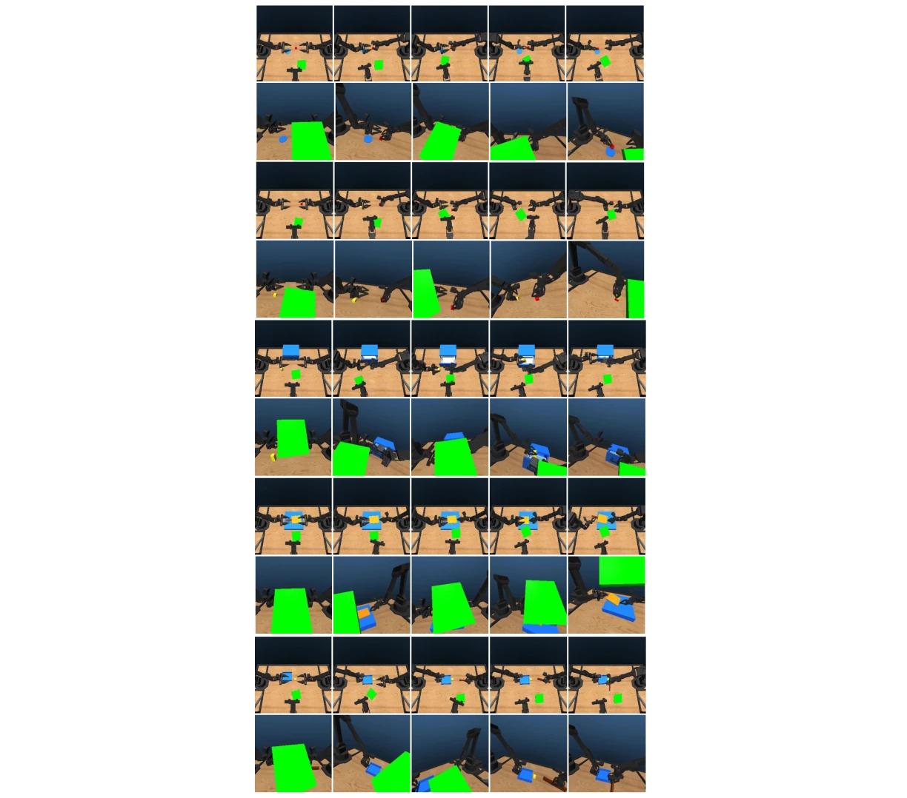
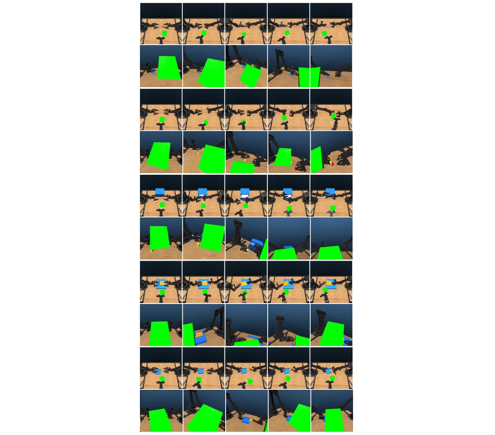
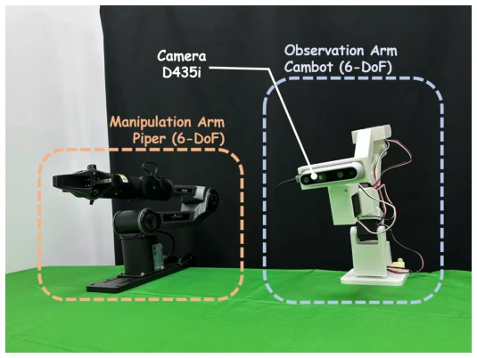

This paper delivers a precise strike to the "blind men touching an elephant" scenario in embodied intelligence. The authors did not pursue flashy end-to-end large models, but rather honestly pulled "active vision" from "task planning" into the muddy pit of "unexpected occlusion recovery." The BAVO-Bench benchmark is designed quite interestingly, dividing occlusion into "scripted performance" and "random insertion," forcing policies to learn to truly see the path rather than memorize the script. Using D4RT to distill 4D priors in A-FAR is a clever move, but directly cutting off the teacher network during deployment is somewhat like "cramming answers before the exam," wondering if it can generalize in the exam hall. Although the CVG metric quantifies "whether it was seen clearly," rendering optimization in simulation may not work on real machines. Overall, this work turns the issue of "not seeing" from a peripheral problem into a core task, worthy of praise, but the generalization ability on real machines still carries a question mark, after all, occlusion objects in simulation won't suddenly change shape, and relying on pre-trained models may increase deployment thresholds.
研究动机Motivation
现有机器人操作大多依赖固定视角或手腕相机，一旦任务区域被外部物体意外遮挡（比如人手闯入），策略就崩了。虽然已有工作探索了主动视觉，如 AV-ALOHA (Chuang et al., 2025) 主要关注任务几何导致的视角需求，而非执行中的突发遮挡。基准测试方面，EFM-10 (He et al., 2026) 和 ActiveManip-Bench (Liu et al., 2026a) 虽涉及遮挡，但多预设了遮挡阶段，缺乏对“随机时间遮挡”的评估。这导致策略往往过拟合了演示中的恢复模式，而非学会真正的感知恢复。本文指出，任务相关性可见性可能在执行中因外部干预突然失效，策略必须在继续操作前恢复信息视角。现有方法难以区分“任务进度”与“干预时机”，无法评估策略是否真正应对了可见性失败而非重放演示。因此，需要一种能区分名义操作、训练匹配恢复和泛化到意外时序的评估体系。
Existing robot manipulation mostly relies on fixed viewpoints or wrist cameras; once the task area is unexpectedly occluded by external objects (e.g., human hand intrusion), the policy collapses. Although existing work has explored active vision, such as AV-ALOHA (Chuang et al., 2025), which mainly focuses on viewpoint requirements caused by task geometry, rather than sudden occlusions during execution. In terms of benchmarking, EFM-10 (He et al., 2026) and ActiveManip-Bench (Liu et al., 2026a) involve occlusion, but mostly preset occlusion stages, lacking evaluation of "random time occlusion." This leads policies to often overfit the recovery patterns in demonstrations, rather than learning true perceptual recovery. This paper points out that task-relevant visibility may suddenly fail during execution due to external intervention, and the policy must restore the information viewpoint before continuing operation. Existing methods struggle to distinguish "task progress" from "intervention timing," unable to evaluate whether the policy truly addressed visibility failure rather than replaying demonstrations. Therefore, an evaluation system is needed that can distinguish nominal operation, training-matched recovery, and generalization to unexpected timing.

Figure 1: Overview of our motivation, benchmark, and approach. (a) We study physical active vision as closed-loop recovery from external occlusion: using a single active camera as the sole visual sensor, the robot actively changes its viewpoint to recover task-relevant visibility and continue manipulation. (b) We introduce BAVO-Bench, a bimanual active-vision manipulation benchmark that systematically introduces controlled external occlusions to study viewpoint recovery, together with a VR teleoperation pipeline for collecting active-view demonstrations. (c) We present A-FAR, an active-vision policy that canonicalizes moving-view observations in robot-centric 3D and distills D4RT’s 4D relational priors, enabling stable, future-aware control under active viewpoint changes.

Figure 2: BAVO-Bench overview. Top: Five multi-stage bimanual manipulation tasks. Bottom: Representative rollouts under the two occlusion settings. Red-bordered frames mark occlusion events, and the timelines illustrate recovery and manipulation behaviors. Both settings occlude task-relevant targets; Stage Occlusion aligns interventions with predefined task transitions, whereas Random-time Occlusion samples intervention times independently of these transitions.
A-FAR is overall built based on ManiFlow, divided into three parts: observation stabilization, 4D relation distillation, and action generation. First, to eliminate observation changes caused by camera motion, all RGB-D observations are back-projected and transformed into a shared robot base coordinate system, forming viewpoint-stable 3D point clouds, ensuring geometric consistency. Second, a training-specific 4D relation teacher network D4RT is introduced, extracting current scene relations and their future evolution through point-aligned queries, serving as supervision signals to distill into the student policy. The WorldQueryFormer module uses current point representations to predict future relation tokens and fuses them into the action generation path via gated residual. The loss function includes current relation loss L_cur and evolution loss L_evo, the latter weighted according to the magnitude of relation change. Finally, jointly optimize relation loss and ManiFlow action objectives. During deployment, the teacher network is removed, relying only on current observations and robot state. This design allows the policy to acquire implicit prediction capabilities for future scene evolution without future observations, thereby balancing subsequent operation needs when actively changing viewpoints, achieving joint control.

Figure 3: Overview of A-FAR. Current RGB-D observations are canonicalized into a robot-base point cloud and encoded as current point tokens Ht. A state-conditioned WorldQueryFormer pre- dicts future relational tokens ˆHF t , which are fused with the current representation for ManiFlow action generation. During training, a frozen D4RT teacher queries the same source points at current and future target times to construct relational targets that supervise the current structure (Lcur) and its temporal evolution (Levo). The teacher branch and future frames are removed at deployment.
Experiments were conducted on 5 two-finger manipulation tasks on the AV-ALOHA simulation platform, comparing ACT, ManiFlow, and π0.5. Evaluation metrics include Success Rate (SR), Task Progress Score (TPS), and Camera Visibility Gain (CVG). Results show that A-FAR outperforms ManiFlow under Clean, Stage, and Random-time occlusions, with SR improving by approximately 3-5 percentage points. Especially under Random-time occlusion, although π0.5 had the highest CVG, SR plummeted to 4.0%, exposing the disconnect between "acquiring information" and "utilizing information." A-FAR achieved better information utilization through joint optimization, with the highest Joint score. Ablation studies show that viewpoint stabilization and future modeling are both effective; removing base coordinates leads to a significant performance drop. Real machine deployment verified the policy's closed-loop recovery capability under physical occlusion, proving the feasibility of sim-to-real, and demonstrating actual effects on a physical active camera platform.

Figure 5: Rollout visualizations under Clean. Representative sequences for the five benchmark tasks without external visibility intervention. For each task, the top row shows the third-person scene view and the bottom row shows the active-camera view. Frames are ordered from left to right.

Figure 6: Rollout visualizations under Stage Occlusion. Representative sequences for the five benchmark tasks with stage-aligned occlusion events. For each task, the top row shows the third- person scene view and the bottom row shows the active-camera view. Frames are ordered from left to right. The sequences highlight how structured occlusions are introduced at predefined task transitions.

Figure 7: Rollout visualizations under Random-time Occlusion. Representative sequences for the five benchmark tasks with temporally unexpected occlusion events. For each task, the top row shows the third-person scene view and the bottom row shows the active-camera view. Frames are ordered from left to right. The sequences illustrate how visibility disruptions may occur during ongoing manipulation behaviors.

Figure 8: Real-world Experiement Setup At the home position, the manipulation arm’s gripper points toward the workspace, and the camera is oriented in the same direction.